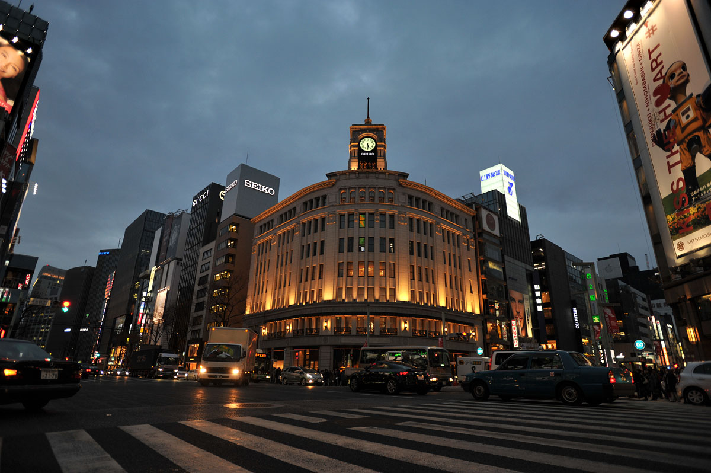
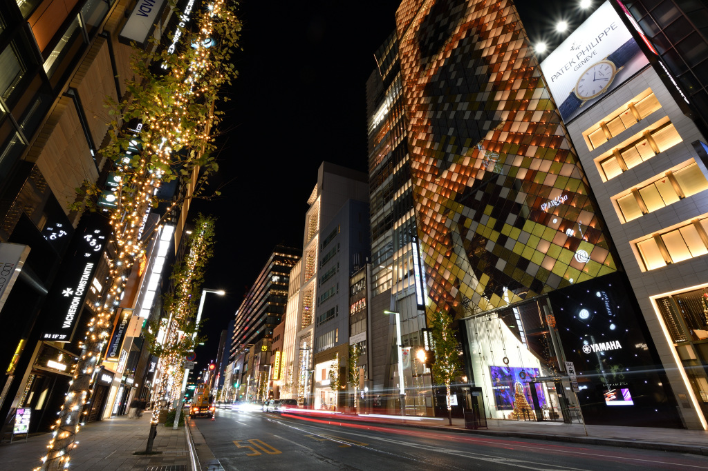

Asakusa and Ueno Culture Walk
Start your morning with a visit to the historic Senso-ji Temple in Asakusa. Afterwards, take a pleasant stroll through Ueno Park to enjoy the beautiful nature and famous museums in the area.
Start your morning with a visit to the historic Senso-ji Temple in Asakusa. Afterwards, take a pleasant stroll through Ueno Park to enjoy the beautiful nature and famous museums in the area.
Explore the colourful street fashion of Takeshita Street in Harajuku. For lunch, walk over to the elegant Omotesando area to find a stylish café and enjoy the sophisticated city centre atmosphere.
Experience the world-famous Shibuya Crossing as the evening begins. Later, head to Shinjuku to see the bright neon lights and feel the exciting pace of Tokyo's most vibrant districts.
Conclude your holiday with a peaceful walk through Ginza. This district is famous for its luxury boutiques and magnificent architecture, which looks spectacular when illuminated at night.

Night Views of Ginza ①
Night Views of Ginza ②